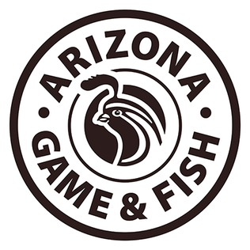
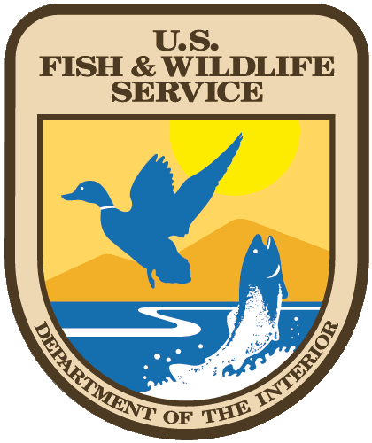
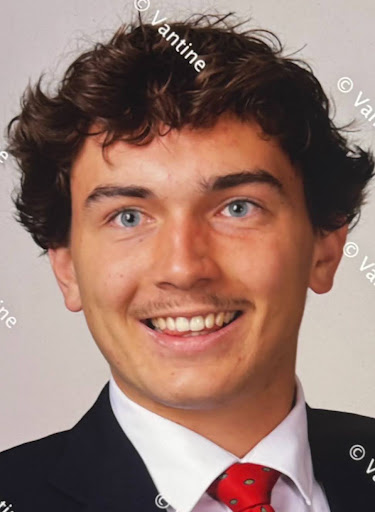
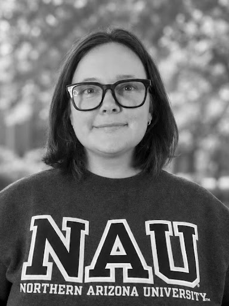
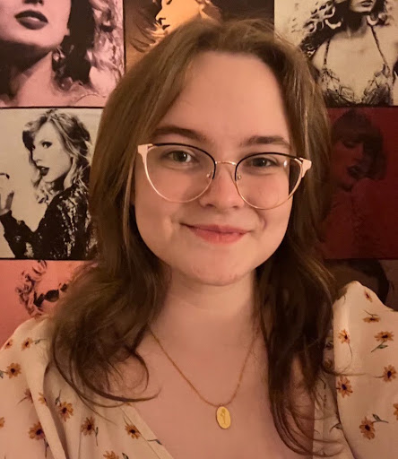

Project Sponsors

David Rogowski
Wildlife Specialist Regional Supervisor
Research Branch
Arizona Game and Fish Department

Pilar Rinker
Fish Biologist
Arizona Fish and Wildlife Conservation Office
U.S. Fish and Wildlife Service
Project Team

Luke Flaker Team Leader

Mia Gallo
